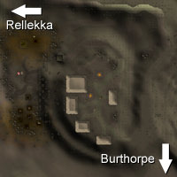
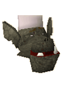
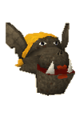
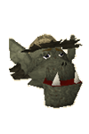

")
Troll Stronghold (Members)
Warning | Introduction | Location | Points of Interest | Personalities
Quests | The Creatures in the Caves | Miscellaneous
Quests | The Creatures in the Caves | Miscellaneous
Warning
Aside from the dangers in even getting to the Troll Stronghold, once you get there you will be faced with an area populated entirely by high-level trolls in a fairly cramped environment. For this reason you should take plenty of food. It is also a good idea to take a Games Necklace so that you can teleport back to Burthorpe if you need to make a hasty escape.
To gain access to the Troll Stronghold you must start the Troll Stronghold quest.
Introduction

The Stronghold is built into the mountains, rather than constructed on top of them, so from a distance it is difficult to see any evidence of it at all. From this 'secret' base the trolls launch their assaults against the puny humans that try to ambush them.
Location

West is the entrance to the dwarven city of Keldagrim and, beyond, the Fremennik settlement of Rellekka.
Just to the north of Trollheim, beyond a pile of enormous boulders, is the ruined temple that marks the entrance to the God Wars Dungeon.
The path to the Troll Stronghold is long and circuitous, not to mention the fact that trolls will throw rocks down from above and attack anyone coming close enough with their brutal clubs.
Points of Interest

The Troll Stronghold is a mammoth structure carved from the rock of the mountains, and filled with one of the most aggressive races in RuneScape. There are still those that can be spoken to, though, even in a settlement so opposed to humans.
Outside the Stronghold itself is a less 'civilised' area, where the smaller trolls live, having been bullied out of the Stronghold by their larger cousins.
There is also the arena, where the massive Dad challenges all comers to single combat. He's honourable, though, and will let anyone that bests him travel on to the Stronghold.
Within the Stronghold, beneath the kitchens, is the store room. Here the trolls hoard their finest food - except for humans, who are kept in cells right next to the trolls' impressive range of torture devices.
Personalities

In a race noted for its physical size, Dad is among the largest. He wields a massive tree trunk that he manages to use with surprising dexterity. He was named so oddly because he was named for the first thing he tried to eat. You can only assume that he succeeded at some point.
|

Burntmeat is the chief chef of the Troll Stronghold, and was named for the first food he tried to cook. It's the mark of a troll's tastes that he has risen from there to his current position.
|
|
| Dad can be found pummelling puny humans in the arena. | Burntmeat can be found tinkering with various stews in the kitchen. |

A troll in love is a strange sight. A troll in love crying for a female troll that doesn't know of his love is simply funny. This is Ug's sadly hilarious predicament. He adores Aga from a distance, scared of telling her of the depth of his affection by her current boyfriend, Arrg.
|

Aga thinks she's a very lucky troll: she has snagged the mighty Arrg, who unfortunately doesn't seem to understand the concept of 'love'. She takes great pride in her appearance, such that she must be one of the true troll beauties.
|
|
| Ug can be found weeping against a wall in the chamber west of the entrance to the Stronghold. | Aga can be found preening herself in the trolls' domestic quarters. |

If the Troll Stronghold has a handsome man that all the ladies want to be with, Arrg is it. He's also extremely aware of this, despite being extremely stupid. He doesn't deserve Aga's love, but it's a brave troll that tries to tell him that.
|

Very few trolls have natural gifts like the troll 'chefs', but My Arm is surely one of them. Despite his failed experiments in growing goats and rocks, his lust for Farming has not diminished. He really only needs someone to explain correct Farming to him and he is sure to become a legend among trollkind.
|
|
| Arrg can be found thinking very little in the trolls' domestic quarters. | My Arm can be found in the kitchen, waiting to figure out how to grow things. |

People might think that someone who chooses to live in mountains infested with trolls is mad. Many of those same people might, if taken captive by trolls, give up and accept that they will end up as some kind of stew. Not so, Eadgar! He may well be mad, but few people could claim to have his determination to survive in such an unforgiving place. |
Quests
The following quest can be started in the Troll Stronghold:
- Troll Romance (Members)
- My Arm's Big Adventure (Members)
The Creatures in the Caves

Given that the Stronghold is the home of most of RuneScape's mountain trolls, it's no surprise that there are plenty of them throughout the area. They are massive brutes with only a very simple understanding of much beyond the concept of beating humans into mush. Being very similar to rock, they are extremely resilient to Magic and Ranged attacks, and considerably weaker against melee.
|

The biggest and nastiest of the trolls that live in the stronghold inevitably rise through the ranks to become the generals of the troll armies. They are great behemoths who adore nothing more than making sure that humans know how incredibly powerful they are. Like other trolls they are best fought in close combat, as they are near-immune to Magic and Ranged attacks.
|
|
| Mountain trolls can be found almost everywhere in the Troll Stronghold. | Troll generals can be found in their residences. |
Miscellaneous
- Once you have completed Eadgar's Ruse you will be able to return to the Troll Stronghold to fetch more goutweed for Sanfew in Taverley. He will reward you by trading it for herbs more useful to you.
- A quick way to the Troll Stronghold is to use the Trollheim Teleport spell, though you must have completed Eadgar's Ruse to use this spell.

More articles in
Cities and Towns
|
|